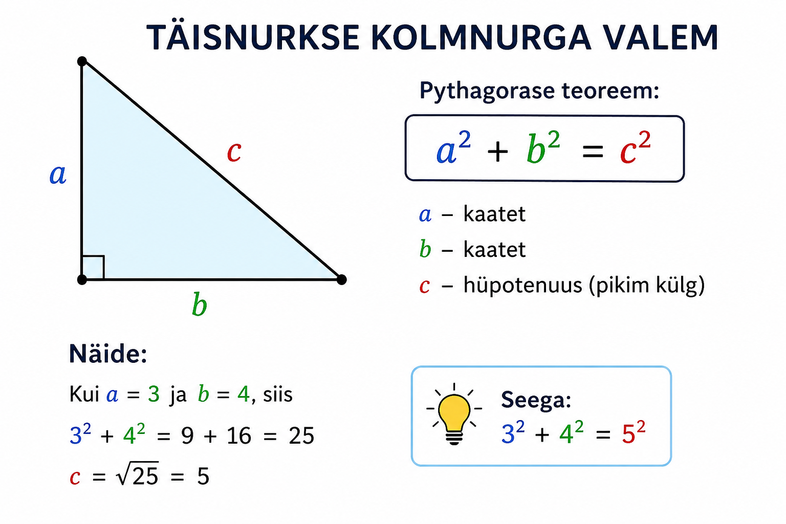

Seda valemit nimetatakse Pythagorase teoreemiks. See valem töötab ainuld täisnurksete kolmnurkade puhul. Kui seda valemit peaks kasutama teistsugusel kolmnurgal, siis see annab sulle vale vastuse.
Kuidas valem töötab? Kui meil oleks vaja leida näiteks c pikkus kolmnurgal, siis me kasutame valemit c² = a² + b². Aga, kui meil on vaja leida a või b pikkus, siis me kasutame vastavalt valemeid a² = c² - b² või b² = c² - a².
peale a, b või c väätruse leidmist, peame me ruututest lahti saama. Sellisel juhul kasutame ruutjuurteoreemi . Siis saame väärtuse.